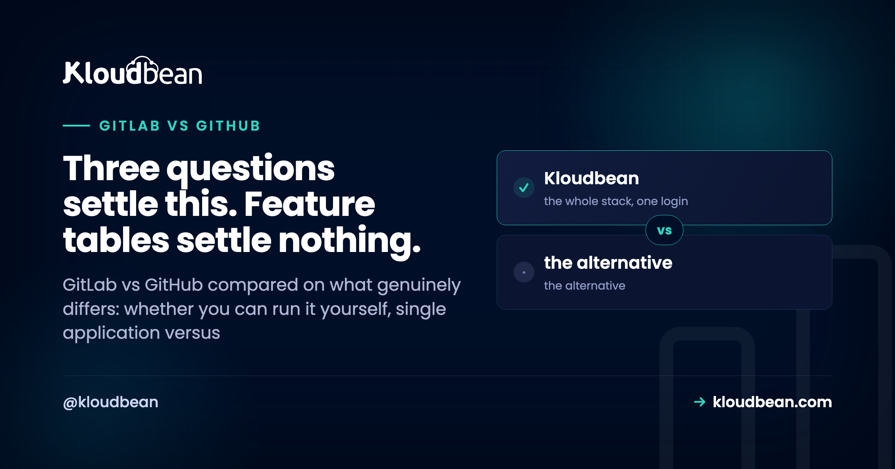

GitLab vs GitHub: Self-Hosting Is the Question That Actually Decides It

Every comparison of these two ends up as a feature grid, and the grid is useless because the features converged years ago. Both host Git repositories, both run CI pipelines, both do code review, issues, container registries, and security scanning. If you pick by counting checkboxes you will conclude they are nearly identical, which is true and unhelpful. What genuinely separates them is narrower and much easier to answer: whether you need to run the thing yourself, whether you want one integrated product or a strong core plus a marketplace, and whether strangers need to find your code.
Choose GitLab if you need to self-host your Git server and pipelines, because its self-managed edition is a genuinely mature free product rather than an enterprise upsell. Choose GitHub for open source, for the largest integration ecosystem, and for the easiest hiring, since it is where developers and tooling already are. If neither of those is decisive, either will serve you well and the tie-breaker is whichever your team already knows. Do not spend a week on this decision; spend it on your deployment pipeline instead.
The three questions
| Question | If yes | Why it decides |
|---|---|---|
| Must the server live on infrastructure you control? | GitLab | Mature free self-managed edition |
| Is this open source, wanting outside contributors? | GitHub | That is where contributors are |
| Do you depend on a long tail of third-party integrations? | GitHub | Everything integrates with it first |
| None of the above | Either | Use what your team knows |
That last row is not a cop-out. For a private team repository with a normal pipeline, the difference between these platforms will not show up in your delivery speed, and the cost of retraining everyone will. Familiarity is a real technical advantage.
Self-hosting: the one genuinely large gap
This is where the platforms diverge most, and it is the reason GitLab still wins deals outright.
GitLab's self-managed edition is a first-class product. You can run the whole thing on your own servers, the community edition is free, and self-hosting is a supported path rather than a special case. Organisations choose it because code has to stay on infrastructure they control, whether for regulatory reasons, data residency requirements, or a policy that source code does not leave the network.
GitHub does offer an enterprise server product, and it is priced and sold as an enterprise product. If your reason for self-hosting is a compliance requirement with a real budget attached, that is fine. If your reason is that you want to run it yourself without a procurement process, GitLab is effectively the only option of the two.
Worth being honest about what self-hosting costs, because the licence being free is the least of it. GitLab is a heavy application: you are running a web application, a database, background workers, a container registry, and separate CI runners, and you own the upgrades, the backups, and the restore test. We cover the real resource floor and sizing in self-hosting GitLab, including why the RAM requirement surprises people.
My honest position: self-host when you have a requirement, not a preference. "We want control" is a preference until somebody names the specific thing that goes wrong without it. If you cannot name it, the hosted option is cheaper in engineering time by a wide margin.
Where the code lives matters for open source
If you want strangers to find, star, fork, and contribute to your project, GitHub is where they already are. That is a network effect rather than a feature, so no amount of GitLab capability changes it.
The practical consequences are concrete. Contributors already have an account and know the pull request flow. Package registries, documentation tools, and CI services assume a GitHub URL. Discovery through search and through GitHub's own surfaces is much stronger. And for anything you want adopted, friction in the contribution path costs you contributions.
For private work none of this applies, which is why the same organisation can reasonably use GitLab internally and publish its open source on GitHub. That is a common and sensible arrangement rather than a contradiction.
One application versus a strong core plus a marketplace
This is the philosophical difference, and it is the one that shows up in day-to-day work once you are past the first two questions.
GitLab's pitch is a single application covering the software lifecycle: repository, CI, registry, security scanning, issue tracking, and deployment in one product with one permission model. The appeal is genuine. Fewer integrations to wire, one place to look, consistent access control.
GitHub's model is an excellent core with an enormous marketplace around it. Actions has a very large library of reusable workflow steps, and essentially every developer tool ships a GitHub integration first. The appeal is also genuine: whatever you need, somebody has already built the connector.
| GitLab | GitHub | |
|---|---|---|
| Self-managed edition | Mature and free | Enterprise product |
| Open source community | Smaller | Where contributors are |
| Third-party integrations | Good | Broadest by a wide margin |
| CI/CD | Integrated from the start | Actions, huge reusable library |
| Lifecycle coverage in one product | Deliberate design goal | Core plus marketplace |
| Hiring and familiarity | Narrower pool | Larger pool |
| Migration in or out | Straightforward, both use Git | Straightforward, both use Git |
The trade underneath the table: an integrated product means fewer moving parts and less choice, while a marketplace means more choice and more parts to maintain. Neither is wrong, and which one suits you depends on whether your team enjoys assembling tooling or resents it.
The CI comparison, deflated
People expect this to be the deciding factor and it rarely is any more. GitLab CI arrived earlier and is deeply integrated with a single configuration file. GitHub Actions arrived later with a marketplace of reusable actions that removes a lot of boilerplate.
Both will build, test, and deploy your application without drama. Both run on hosted runners or your own. Both express pipelines in YAML that is pleasant until it is not. If you are choosing between them on CI capability alone, you are optimising a difference your team will stop noticing after a fortnight.
Two practical notes that matter more than the feature comparison. Self-hosted runners are worth understanding on either platform, because hosted minutes are metered and long builds get expensive, and because runners with access to your infrastructure need the same care as any deployment credential. And whichever you pick, the pipeline should end by deploying somewhere, which is the part that actually affects your delivery speed.
Migrating between them is not the hard part
A useful thing to know before agonising over the choice: your Git history is portable by definition. Both platforms speak Git, so moving repositories is a push away.
# Mirror a repository to a new remote, refs and all
git clone --mirror https://old-host.example.com/team/app.git
cd app.git
git remote set-url --push origin https://new-host.example.com/team/app.git
git push --mirrorWhat does not move cleanly is everything around the code: issues, merge or pull requests with their review history, CI configuration, secrets, webhooks, and permissions. Both platforms provide importers that handle a good deal of this, and the review history is the part most likely to arrive incomplete.
So the honest risk assessment is that picking wrongly costs you a migration project measured in days rather than a rewrite. That should lower the stakes considerably, and it is a reason not to spend three weeks on a decision matrix.
A decision path
Stop at the first line that describes you.
- Code must stay on infrastructure you control, and you have a real requirement. GitLab self-managed.
- You are publishing open source and want contributors. GitHub.
- You depend on a specific integration. Check which platform has a maintained one, then pick that. This overrides everything else.
- You want one product for the whole lifecycle with minimal wiring. GitLab.
- You want the largest ecosystem and easiest hiring. GitHub.
- Your team already uses one of them productively. Stay. The switching cost exceeds the benefit.
- Genuinely undecided, new team, private code. GitHub, because the ecosystem and hiring advantage compounds and you can move later if you need to.
Deploying from either one
Whichever you choose, the pipeline has to end somewhere, and that is the part worth more of your attention than the platform choice.
Being precise about what Kloudbean documents here rather than vague: the managed CI/CD integration connects a Git repository so that a push builds and deploys, with deployment history and live build logs in the console, and the documented provider for that integration and for OAuth sign-in is GitHub. Our auto-deploy from GitHub guide walks through that setup.
If you are on GitLab, that is worth knowing before you plan your pipeline. You are not stuck: there is the adm deployment utility for scripted deploys, and a GitLab pipeline can deploy to a Kloudbean server the same way it would deploy to any server you control, with your pipeline doing the build and the push. It is a slightly different shape of work than the one-click repository connection, and I would rather say so than let you discover it after choosing.
What is the same either way: managed servers across seven clouds with your choice of region, managed MySQL, MariaDB, PostgreSQL, Redis, Elasticsearch, and MongoDB, free SSL issued and renewed, automatic backups, and servers, applications, and databases in one dashboard.

If gitLab vs GitHub was the easy part
If self-hosting is your answer, self-hosting GitLab covers the resource floor, sizing by team size, and what the licence being free does not include. For the deploy half, CI/CD auto-deploy from GitHub and zero downtime deployments. On pipeline hygiene, environment variables done right. When a deploy breaks, a Node app crashing on deploy and 503 after deploying. And for a broad view of the target, how to deploy any app.
Move it once. Own it after.
Standard code moves onto a standard Linux server, so this is a migration rather than a rewrite. Pick from seven clouds, keep push-to-deploy, and get help moving the first workload across.
- ✓ Free migration assistance
- ✓ Free trial
- ✓ Seven cloud providers
- ✓ Flat monthly price
- ✓ Managed databases
- ✓ Git deploy
FAQ
Is GitLab better than GitHub?
For one requirement, clearly: if you need to run the platform on your own infrastructure, GitLab's self-managed edition is a mature free product while GitHub's equivalent is an enterprise purchase. For open source reach, integration breadth, and hiring, GitHub wins. On core features they have largely converged, so decide on those specific requirements rather than comparing capability lists.
What is the main difference between GitLab and GitHub?
Philosophy. GitLab aims to be a single application covering the whole software lifecycle with one permission model, so there is less to wire together and less to choose from. GitHub offers a strong core plus an enormous marketplace, so there is more choice and more to maintain. Both host Git and run pipelines competently.
Can I self-host GitHub like GitLab?
There is an enterprise server product, and it is sold and priced as an enterprise product rather than as a free self-managed edition. If your self-hosting need comes with a compliance requirement and a budget, that works. If you simply want to run it yourself without procurement, GitLab is effectively your option of the two.
Is GitLab CI better than GitHub Actions?
Not in a way that should decide your platform. GitLab CI is older and deeply integrated through a single configuration file; Actions has a very large library of reusable steps that removes boilerplate. Both build, test, and deploy without drama, and after a couple of weeks your team will stop noticing the difference.
How hard is it to migrate from GitLab to GitHub?
The code is trivial, since both speak Git and a mirror push moves every ref. What migrates imperfectly is everything around it: issues, merge or pull request review history, CI configuration, secrets, webhooks, and permissions. Both platforms provide importers, and review history is the part most likely to arrive incomplete. Budget days, not weeks.
Which should I use for an open source project?
GitHub, unless you have a specific reason not to. That is where contributors already have accounts, know the workflow, and will find you, and where most tooling assumes your repository lives. It is a network effect rather than a feature, so no amount of GitLab capability offsets it.
Can I use both?
Yes, and plenty of organisations sensibly do: GitLab self-managed for internal code that must stay on their own infrastructure, and GitHub for anything published as open source. Since both speak Git, mirroring a repository between them is straightforward if you want a project in both places.
Does Kloudbean deploy from GitLab?
The documented repository integration and OAuth provider is GitHub, so the one-click connect-and-deploy flow is described for GitHub. From GitLab you would deploy the way you would to any server you control, using your own pipeline or the adm deployment utility. Worth knowing before you plan the pipeline rather than after.